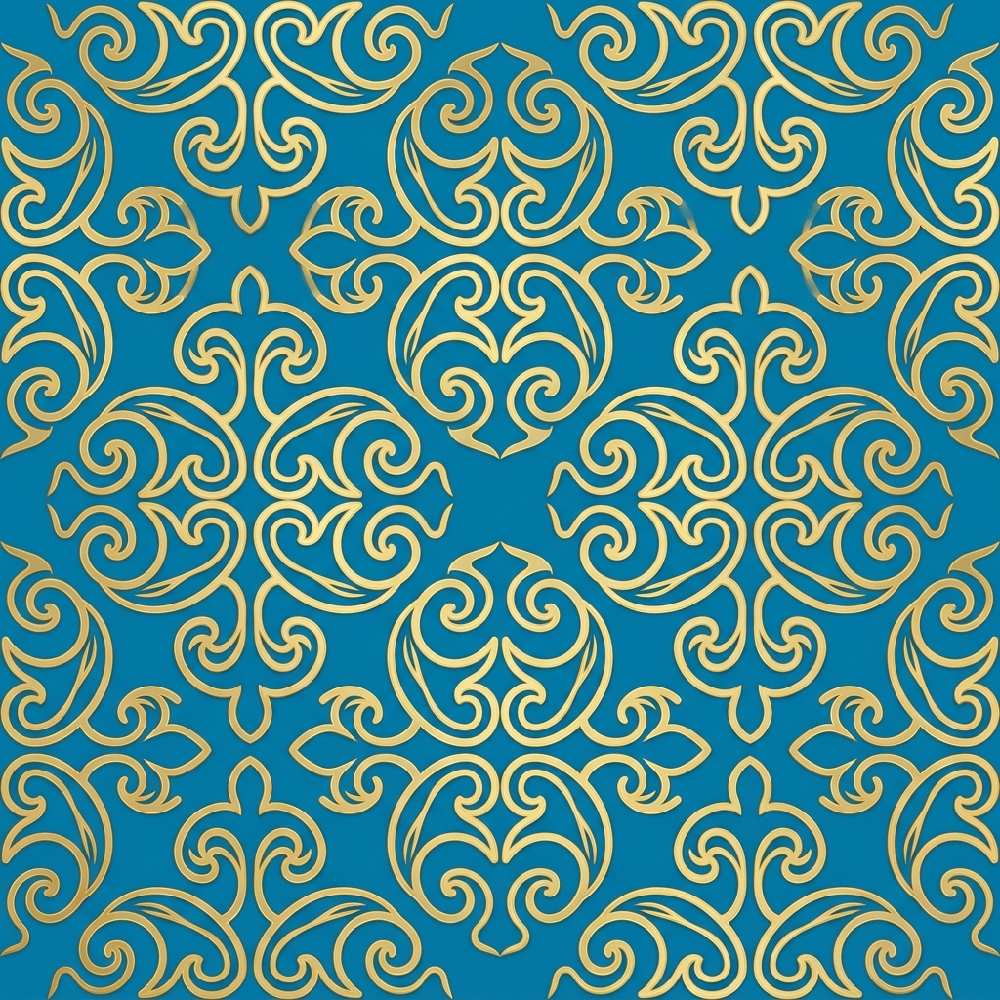
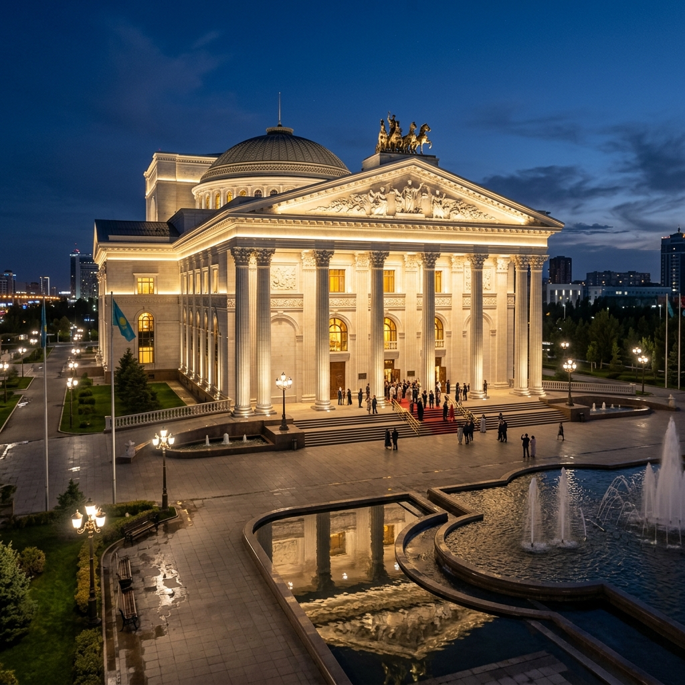
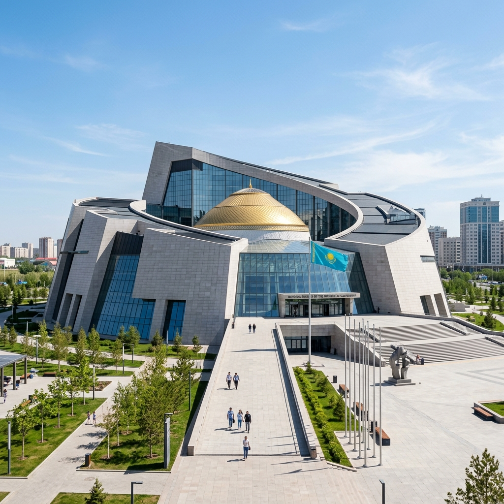
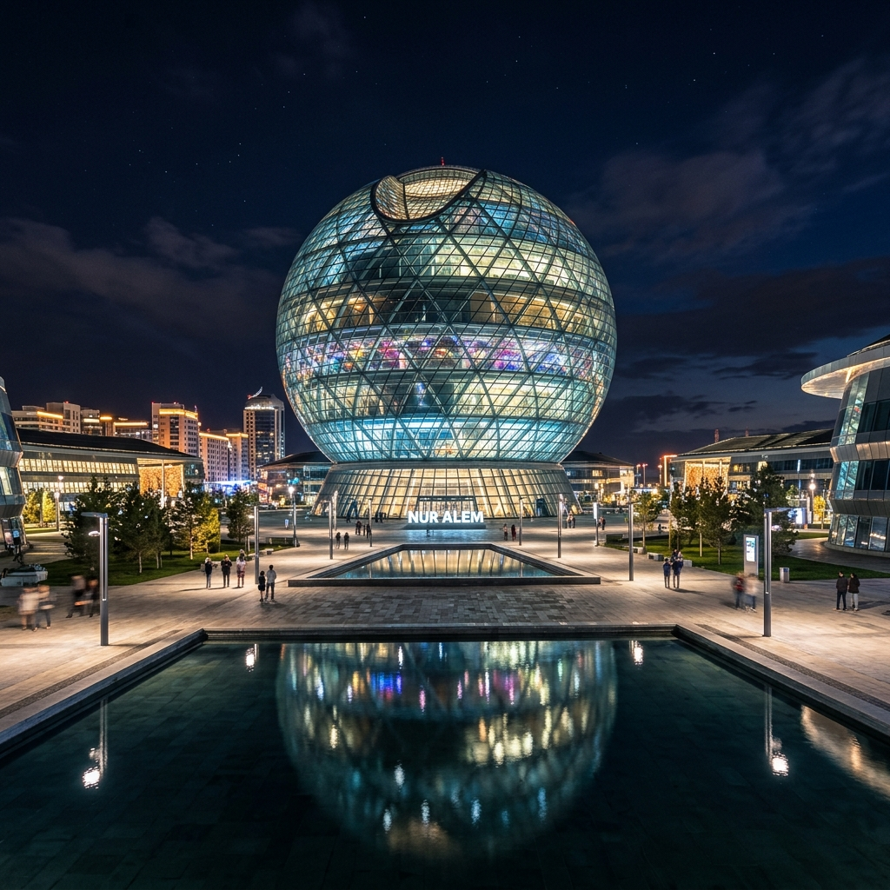

The Yurt (Kiiz Ui)
An ingenious mobile dwelling that perfectly adapted to the nomadic way of life, reflecting a deep connection with nature.
A journey through nomadic traditions, majestic modern cities, and a deeply rooted cultural heritage.
Explore CultureKazakh culture is a vibrant tapestry woven from centuries of nomadic life on the vast steppes.
An ingenious mobile dwelling that perfectly adapted to the nomadic way of life, reflecting a deep connection with nature.
The soul of the Kazakh people. This traditional two-stringed instrument carries the melodies of the steppe through generations.
From masterful horseback riding to intricate crafts and textiles, the nomadic spirit is alive in modern Kazakh identity.
Treating guests with the utmost respect and offering abundant traditional food is a sacred duty in Kazakh society.

Explore the iconic architectural landmarks and cultural centers of Astana.

TheatreA masterpiece of neoclassical architecture, presenting world-class opera and ballet performances.
Read More
MuseumThe largest museum in Central Asia, housing rich collections from ancient times to modern days.
Read More
CentreThe iconic glowing sphere from Expo 2017, functioning as a vibrant interactive science and tech museum.
Read More